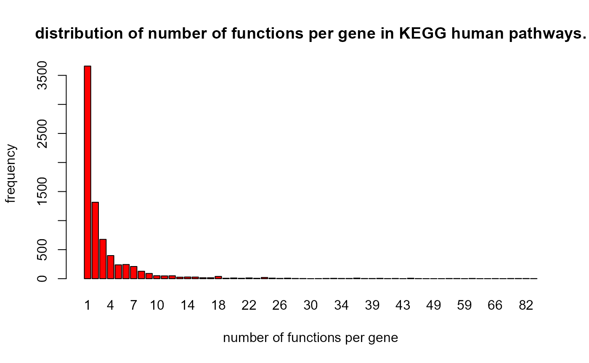

Sigora.RmdThis package implements the pathway analysis method SIGORA. For an in depth description of the method, please see our manuscript in PeerJ. In short: a GPS (gene pair signature) is a (weighted) pair of genes that as a combination occurs only in a single pathway within a pathway repository. A query list is a vector containing a gene list of interest (e.g. genes that are differentially expressed in a particular condition). A present GPS is a GPS for which both components are in the query list. SIGORA identifies relevant pathways based on the over-representation analysis of their (present) GPS.
@section Getting started:
To load the library:
library("sigora")A thought experiment Imagine you randomly selected 3 KEGG pathways, and then randomly selected a total of 50 genes from all genes that that are associated with any of these pathways. Using traditional methods (hypergeometric test using individual genes), how many pathways would you estimate to show up as statistically overrepresented in this “query list” of 50 genes?
Let us do this experiment! Everything related to human KEGG Pathways can be found in kegH. A function to randomly select \(n\) genes from m randomly selected pathways is genesFromRandomPathways. The traditional Overrepresentation Analysis (which is the basis for many popular tools) is available through ora. Putting these together:
data(kegH)
set.seed(seed = 12345)
a1 <- genesFromRandomPathways( kegH, 3, 50)## ### randomly selected pathways are:
## hsa04218
## hsa00590
## hsa04917
## originally selected pathways:
a1[["selectedPathways"]] ## what are the genes## [1] "hsa04218" "hsa00590" "hsa04917"
a1[["genes"]]## [1] "9134" "91860" "5499" "22800" "1111" "90550"
## [7] "6776" "1874" "8792" "4051" "28996" "22808"
## [13] "1557" "890" "5594" "493869" "5606" "8600"
## [19] "2876" "100137049" "83447" "894" "1030" "1559"
## [25] "11145" "4773" "1573" "4893" "7248" "5296"
## [31] "293" "3708" "2053" "147746" "874" "1081"
## [37] "23291" "3803" "8681" "292" "2878" "2678"
## [43] "391013" "824" "5605" "3972" "4616" "85417"
## [49] "891" "5291"
## Traditional ora identifies dozens of statistically significant pathways!
ora(a1[["genes"]], kegH) |> head()## pathwyid description success pathwaySize pvalues
## 1 hsa04218 Cellular senescence 31 160 2.015e-40
## 2 hsa00590 Arachidonic acid metabolism 14 63 1.518e-18
## 3 hsa04917 Prolactin signaling pathway 11 70 6.203e-13
## 4 hsa05166 HTLV-I infection 15 219 5.903e-12
## 5 hsa04912 GnRH signaling pathway 10 93 3.811e-10
## 6 hsa00591 Linoleic acid metabolism 7 29 5.518e-10
## Bonfer
## 1 3.304600e-38
## 2 2.489520e-16
## 3 1.017292e-10
## 4 9.680920e-10
## 5 6.250040e-08
## 6 9.049520e-08
## Now let us try sigora with the same input:
sigoraRes <-
sigora(GPSrepo = kegH,
queryList = a1[["genes"]],
level = 4)## pathwy.id description pvalues Bonferroni successes
## 1 hsa04218 Cellular senescence 1.669e-108 5.090e-106 56.68
## 2 hsa00590 Arachidonic acid metabolism 3.125e-41 9.531e-39 21.83
## PathwaySize N sample.size
## 1 2037.98 452219.2 87.58
## 2 606.97 452219.2 87.58
## Again, the three originally selected pathways were:
a1[["selectedPathways"]]## [1] "hsa04218" "hsa00590" "hsa04917"You might want to rerun the above few lines of code with different values for seed and convince yourself that there indeed is a need for a new way of pathway analysis.
The current version of the package comes with precomputed GPS-repositories for KEGG human and mouse (kegH and kegM respectively), as well as for Reactome human and mouse (reaH and reaM respectively). The package provides a function for creating GPS-repositories from user’s own gene-function repository of choice (example Gene Ontology Biological Processes). The following section describes this process of creating one’s own GPS-repositories using the PCI-NCI pathways from National Cancer Institute as an example.
You can create your own GPS repositories using the makeGPS() function. There are no particular requirements on the format of your source repository, except: it should be provided either a tab delimited file or a dataframe with \bold{three columns in the following order: - PathwayID, PathwayName, Gene.
data(nciTable) ## what does the input look like?
head(nciTable) ## create a SigObject. use the saveFile parameter for future reuse.## pathwayId pathwayName
## 1 pi3kplctrkpathway Trk receptor signaling mediated by PI3K and PLC-gamma
## 2 pi3kplctrkpathway Trk receptor signaling mediated by PI3K and PLC-gamma
## 3 pi3kplctrkpathway Trk receptor signaling mediated by PI3K and PLC-gamma
## 4 pi3kplctrkpathway Trk receptor signaling mediated by PI3K and PLC-gamma
## 5 pi3kplctrkpathway Trk receptor signaling mediated by PI3K and PLC-gamma
## 6 pi3kplctrkpathway Trk receptor signaling mediated by PI3K and PLC-gamma
## gene
## 1 ENSG00000140992
## 2 ENSG00000196689
## 3 ENSG00000142208
## 4 ENSG00000145675
## 5 ENSG00000138741
## 6 ENSG00000152495## Time difference of 1.086143 secs
ils <- grep("^IL", idmap[, "Symbol"], value = TRUE)
ilnci <- sigora(queryList = ils,
GPSrepo = nciH,
level = 3)## [1] "Mapped identifiers from Symbol to Ensembl.Gene.ID ..."
## pathwy.id description pvalues Bonferroni successes
## 1 il23pathway IL23-mediated signaling events 5.494e-64 1.049e-61 36.27
## 2 il27pathway IL27-mediated signaling events 3.164e-34 6.043e-32 18.14
## 3 il12_2pathway IL12-mediated signaling events 3.188e-12 6.089e-10 13.20
## 4 il1pathway IL1-mediated signaling events 1.115e-09 2.130e-07 8.42
## 5 il4_2pathway IL4-mediated signaling events 1.070e-05 2.044e-03 9.03
## PathwaySize N sample.size
## 1 172.95 46257.95 93.08
## 2 65.51 46257.95 93.08
## 3 420.16 46257.95 93.08
## 4 156.05 46257.95 93.08
## 5 687.89 46257.95 93.08Analysis, use the function sigora. For traditional Overrepresentation Analysis, use the function ora.
Exporting the results Simply provide a file name to the saveFile parameter of sigora, i.e. (for the above experiment):
sigRes <-
sigora(kegH,
queryList = a1$genes,
level = 2,
saveFile = NULL)## pathwy.id description pvalues Bonferroni successes
## 1 hsa04218 Cellular senescence 1.669e-108 5.090e-106 56.68
## 2 hsa00590 Arachidonic acid metabolism 3.125e-41 9.531e-39 21.83
## PathwaySize N sample.size
## 1 2037.98 452219.2 87.58
## 2 606.97 452219.2 87.58You will notice that the file also contains the list of the relevant genes from the query list in each pathway. The genes are listed as human readable gene symbols and sorted by their contribution to the statistical significance of the pathway.
between ENSEMBL-IDS, ENTREZ-IDS and Gene-Symbols are performed automatically.
You can, for instance, create a GPS-repository using ENSEMBL-IDs and perform Signature Overrepresentation Analysis using this repository on a list of ENTREZ-IDs.
data('kegH')
data('idmap')
barplot(
table(kegH$L1$degs),
col = "red",
main = "distribution of number of functions per gene in KEGG human pathways.",
ylab = "frequency",
xlab = "number of functions per gene"
)
## Time difference of 1.039909 secs
ils <- grep("^IL", idmap[, "Symbol"], value = TRUE)
## signature overrepresentation analysis:
sigRes.ilnci <- sigora(queryList = ils,
GPSrepo = nciH,
level = 3)## [1] "Mapped identifiers from Symbol to Ensembl.Gene.ID ..."
## pathwy.id description pvalues Bonferroni successes
## 1 il23pathway IL23-mediated signaling events 5.494e-64 1.049e-61 36.27
## 2 il27pathway IL27-mediated signaling events 3.164e-34 6.043e-32 18.14
## 3 il12_2pathway IL12-mediated signaling events 3.188e-12 6.089e-10 13.20
## 4 il1pathway IL1-mediated signaling events 1.115e-09 2.130e-07 8.42
## 5 il4_2pathway IL4-mediated signaling events 1.070e-05 2.044e-03 9.03
## PathwaySize N sample.size
## 1 172.95 46257.95 93.08
## 2 65.51 46257.95 93.08
## 3 420.16 46257.95 93.08
## 4 156.05 46257.95 93.08
## 5 687.89 46257.95 93.08## R version 4.1.1 (2021-08-10)
## Platform: x86_64-w64-mingw32/x64 (64-bit)
## Running under: Windows 10 x64 (build 19044)
##
## Matrix products: default
##
## locale:
## [1] LC_COLLATE=English_United States.1252
## [2] LC_CTYPE=English_United States.1252
## [3] LC_MONETARY=English_United States.1252
## [4] LC_NUMERIC=C
## [5] LC_TIME=English_United States.1252
##
## attached base packages:
## [1] stats graphics grDevices utils datasets methods base
##
## other attached packages:
## [1] sigora_3.99.5
##
## loaded via a namespace (and not attached):
## [1] rprojroot_2.0.2 digest_0.6.28 crayon_1.4.2 slam_0.1-49
## [5] R6_2.5.1 magrittr_2.0.1 evaluate_0.14 highr_0.9
## [9] stringi_1.7.5 rlang_0.4.12 cachem_1.0.6 fs_1.5.0
## [13] jquerylib_0.1.4 ragg_1.2.0 rmarkdown_2.11 pkgdown_1.6.1
## [17] textshaping_0.3.6 desc_1.4.0 tools_4.1.1 stringr_1.4.0
## [21] yaml_2.2.1 xfun_0.28 fastmap_1.1.0 compiler_4.1.1
## [25] systemfonts_1.0.3 memoise_2.0.0 htmltools_0.5.2 knitr_1.36